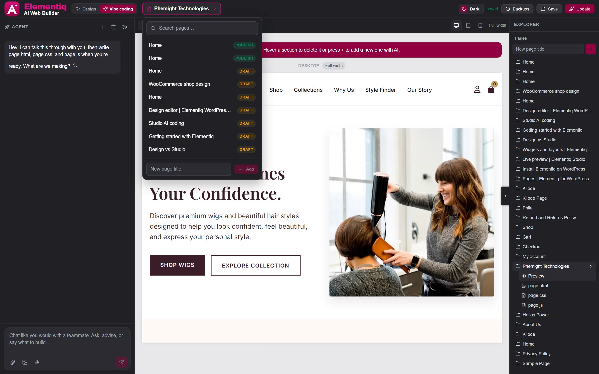
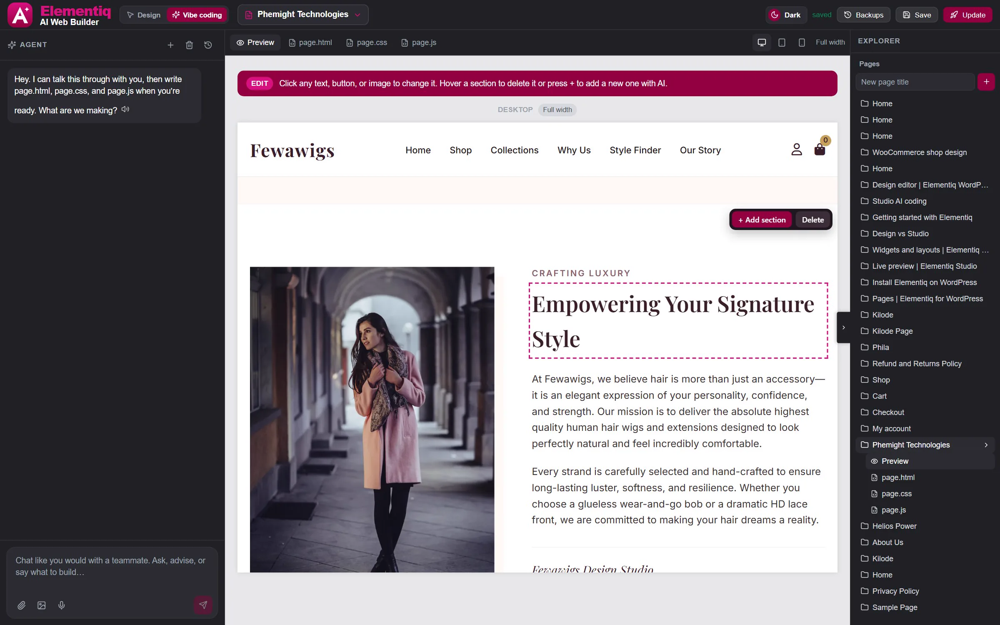
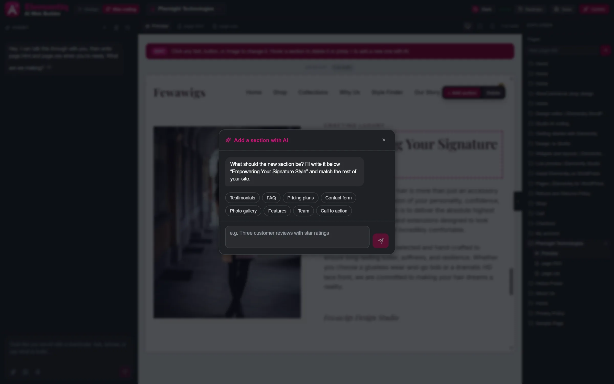
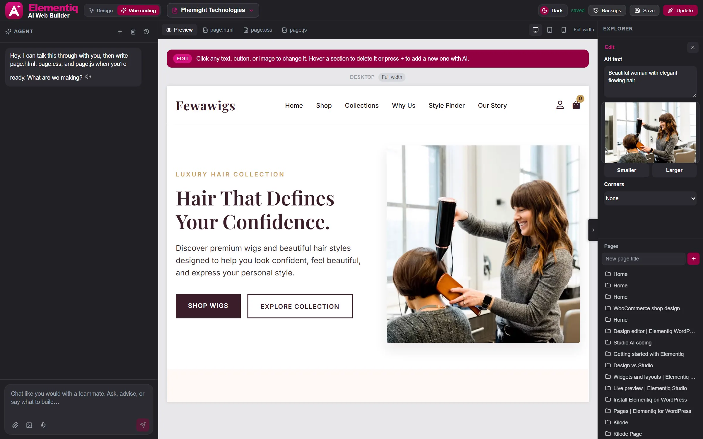
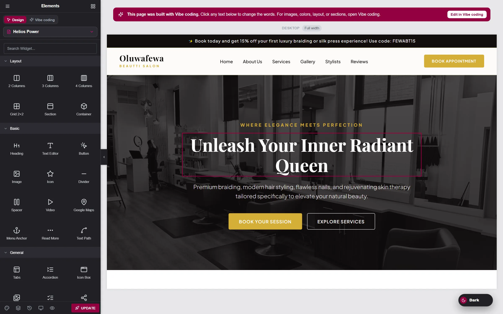
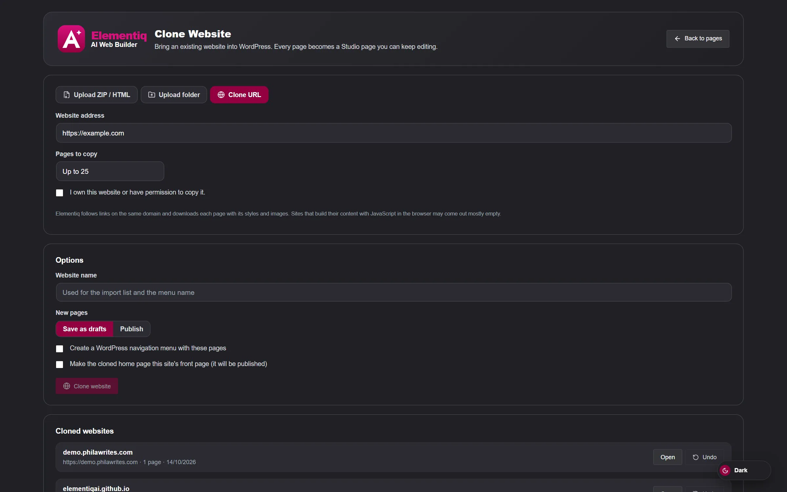

What’s new
Each new feature below comes with a real screenshot and the exact clicks to use it. Studio appears as the Vibe coding tab inside the editor, so that is the name you will see in the steps. Click any screenshot to open it full size.
The page name at the top of the editor is now a button. Jump to any other page without going back to the WordPress dashboard.

The page list opens under the page name, with search, status badges, and a quick Add box.
Remove a whole part of a Vibe coding page, such as a banner or a block you no longer want, right from the live preview. No prompt needed.

Hover any section to see its outline and the Add section / Delete bar.
Ask Elementiq’s AI for one new section, and it writes it in the same style as the rest of your page. Everything else on the page stays as it is.
This uses the AI provider you connected in Elementiq → Settings. If the provider is busy, the chat shows the error and nothing on your page changes. AI setup

The chat tells you where the section will go and offers quick ideas.
When you click a photo, the side panel now shows the current image instead of a plain button, so you always know what you are changing.

The current photo is shown in the panel. Click it to replace it from the Media Library.
If you built a page in Vibe coding and then open the Design tab, you see your real page instead of an empty canvas. You can change its words right there.

Click a heading in Design to edit its words.
Bring an existing website into your WordPress site. Every page becomes a page you can keep editing in Vibe coding.
Only clone websites you own or have permission to copy. Sites that build their content with JavaScript in the browser may come out mostly empty.

Clone from a ZIP, a folder, or a web address, then open or undo each import.
Build a contact form, place it on any page, and read every message in one inbox inside WordPress.
Update or install the plugin, open a page, and follow the steps above.